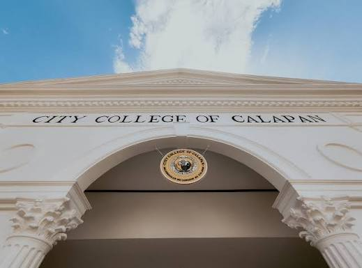

Mark Benedict Selda
BSIS 3B — Bachelor of Science in Information Systems
Academic Details
- Name: Mark Benedict Selda
- Course: Bachelor of Science in Information Systems (BSIS) 3B
- Department: Institute of Library and Information System
- School: City College of Calapan
Interest in Technical Writing
I am interested in technical writing because it bridges the gap between complex information and the people who need to understand it. In the field of Information Systems, clear documentation, user manuals, and structured reports are essential for effective communication. Learning technical writing helps me present technical concepts accurately, concisely, and professionally — skills that are valuable in both academic and professional settings.
Purpose of This Website
This website was created as a course project for our Technical Writing class. It organizes the seven core lecture topics we studied, along with examples, explanations, and visual learning aids, into an accessible educational resource for students, instructors, and anyone interested in technical communication.

City College of Calapan
Institute of Library and Information System
This educational website was developed as part of the Technical Writing course at City College of Calapan, under the Institute of Library and Information System.